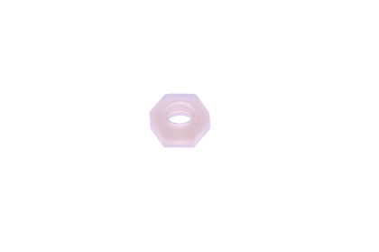
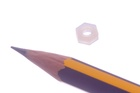
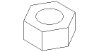

M3 Nylon Nut - NN3

Summary
Name: M3 Nylon Nut
ID: NNUT-M3-X-STAN-01
Hex ID: NN3
WebPage: https://github.com/oomlout/oomlout-OOMP/wiki/NNUT-M3-X-STAN-01
Short URL: http://oom.lt/NN3
Revision History: https://github.com/oomlout/oomlout-OOMP/blob/master/parts/NNUT-M3-X-STAN-01/
| Type |
Size |
Color |
Description |
Index |
NNUT
Nylon Nut |
M3
M3 |
X
|
STAN
|
01
|
Images


About
This part is awaiting a description.
Specifications
| Info |
Value |
| Type |
Nylon Nut |
| Size |
M3 |
Extra Details
Spotted a mistake, want to add more? Let us know oomp@oomlout.com
All images and resources are licensed [CC BY-SA] unless otherwise stated (ie. the datasheets)